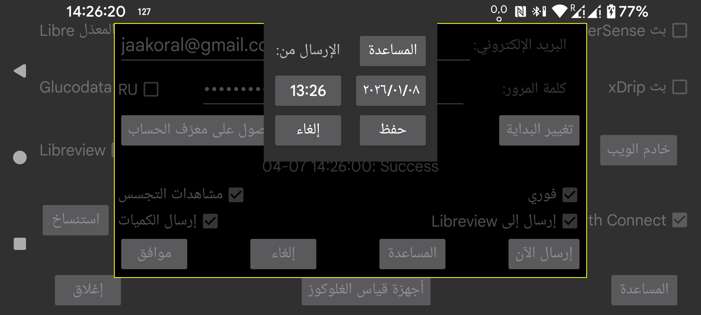

يغيّر هذا الخيار التاريخ والوقت اللذين تبدأ منهما البيانات المرسلة إلى Libreview.
يكون هذا مفيدًا عندما تكون بعض البيانات موجودة مسبقًا في Libreview، مثلًا بعد استخدام اتصال استنساخ لنقل البيانات إلى هاتف آخر ثم استخدام ذلك الهاتف لإرسال البيانات إلى Libreview.